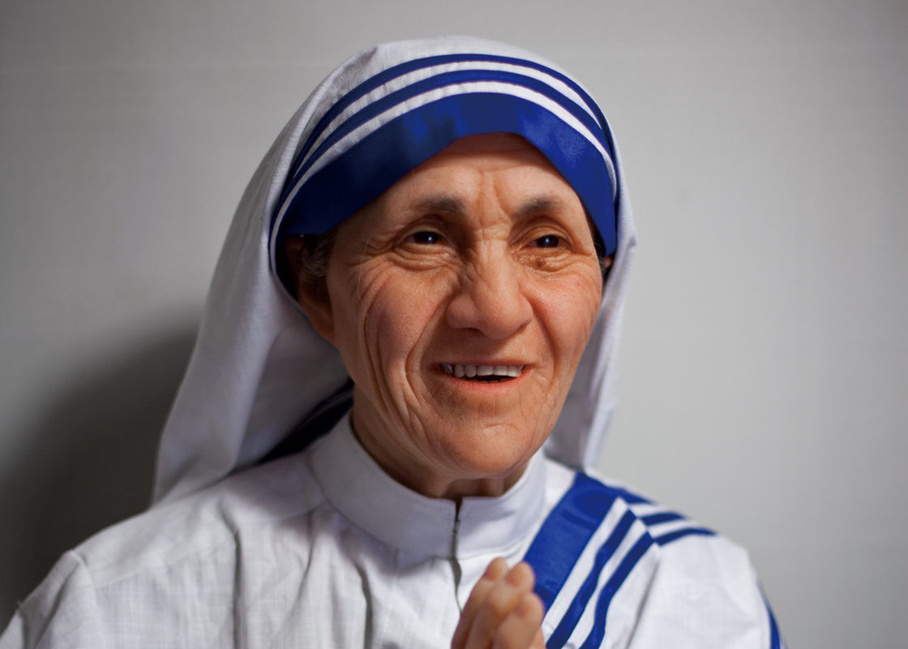

Biography
Mother Teresa, known in the Catholic Church as Saint Teresa of Calcutta, was a Roman Catholic nun and missionary. She was born in Skopje, now the capital of North Macedonia. She founded the Missionaries of Charity, a religious congregation dedicated to helping the poor.
Here's a quote from Mother Teresa:
Peace begins with a smile.
Notable Works
| Year | Work |
|---|---|
| 1950 | Founded the Missionaries of Charity |
| 1979 | Nobel Peace Prize |
| 1985 | Presidential Medal of Freedom |